Overview
To simplify ggplot2 visualisation, ggblanket provides:
- Over thirty gg_* wrapper functions
- A single col argument to colour and fill by a variable
- A pal argument to customise colours
- A facet argument to facet by a variable
- An additional facet2 argument to facet by a 2nd variable
- Prefixed arguments to customise titles, scales, guides, and faceting
- Unspecified x/y/col titles converted to sentence case
- Ability to set the theme, including to provided themes
- Pretty defaults for symmetry
- Access to other geom_* arguments via …
- Ability to add multiple geom_* layers
- Other differences: stats, oobs, clipping, unused factor levels, ordering, alpha etc
library(dplyr)
library(ggplot2)
library(ggblanket)
library(patchwork)
penguins <- palmerpenguins::penguins |>
mutate(sex = stringr::str_to_sentence(sex)) |>
tidyr::drop_na(sex)1. Over thirty gg_* wrapper functions
Each gg_* function wraps a ggplot2
ggplot(aes(...)) function with the applicable ggplot2
geom_*() function. All aesthetics are placed directly in
the gg_* function: they are not within a
ggplot2::aes function. For all functions except
gg_blank, the stat is locked to that which is default to
the applicable geom_* function.
# ggplot2
penguins |>
ggplot() +
geom_point(aes(x = flipper_length_mm,
y = body_mass_g))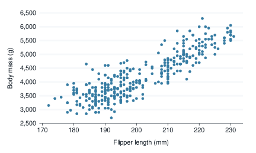
# ggblanket
penguins |>
gg_point(
x = flipper_length_mm,
y = body_mass_g)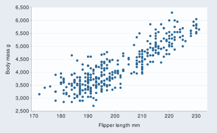
2. A single col argument to colour and fill by a variable
The colour and fill aesthetics of ggplot2 are merged into a single
concept represented by the col argument. This argument
means that everything should be coloured according to it, i.e. all
points, lines and polygon interiors.
# ggplot2
p1 <- penguins |>
ggplot() +
geom_point(aes(x = flipper_length_mm,
y = body_mass_g,
colour = species)) +
theme(legend.position = "bottom") +
guides(colour = guide_legend(title.position = "top")) +
labs(colour = "Species") +
scale_x_continuous(breaks = scales::breaks_pretty(n = 3))
p2 <- penguins |>
ggplot() +
geom_density(aes(x = flipper_length_mm,
fill = species)) +
theme(legend.position = "bottom") +
guides(fill = guide_legend(title.position = "top")) +
labs(fill = "Species")
p1 + p2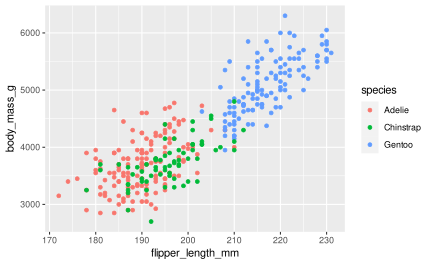
# ggblanket
p1 <- penguins |>
gg_point(
x = flipper_length_mm,
y = body_mass_g,
col = species,
x_breaks = scales::breaks_pretty(n = 3),
col_legend_ncol = 2)
p2 <- penguins |>
gg_density(
x = flipper_length_mm,
col = species,
x_breaks = scales::breaks_pretty(n = 3),
col_legend_ncol = 2)
p1 + p2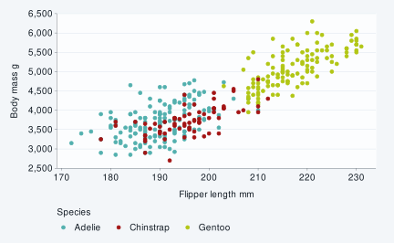
3. A pal argument to customise colours
The pal argument is used to customise the colours of the
geom. A user can provide a vector of colours to this argument. It can be
named or not. It works in a consistent way - regardless of whether a
col argument is added or not. A named palette can be used
to make individual colours stick to particular values.
# ggplot2
p1 <- penguins |>
ggplot() +
geom_histogram(aes(x = body_mass_g),
fill = "#1B9E77") +
scale_x_continuous(breaks = scales::breaks_pretty(n = 3))
p2 <- penguins |>
ggplot() +
geom_jitter(aes(x = species,
y = body_mass_g,
colour = sex)) +
scale_colour_manual(values = c("#2596be", "#fc7c24"))
p1 + p2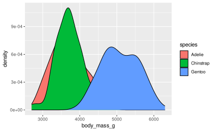
# ggblanket
p1 <- penguins |>
gg_histogram(
x = body_mass_g,
pal = "#1B9E77",
x_breaks = scales::breaks_pretty(n = 3))
p2 <- penguins |>
gg_jitter(
x = species,
y = body_mass_g,
col = sex,
pal = c("#2596be", "#fc7c24"))
p1 + p2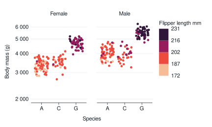
4. A facet argument to facet by a variable
Faceting is treated as if it were an aesthetic. Users just provide an
unquoted variable to facet by. If a single facet (or facet2) variable is
provided, it’ll default to a “wrap” layout. But users can change this
with a facet_layout = "grid" argument.
# ggplot2
penguins |>
ggplot() +
geom_violin(aes(x = sex,
y = body_mass_g)) +
facet_wrap(~species) 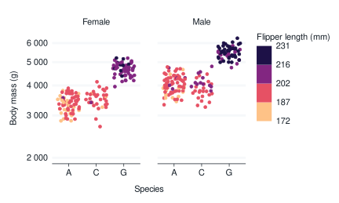
# ggblanket
penguins |>
gg_violin(
x = sex,
y = body_mass_g,
facet = species)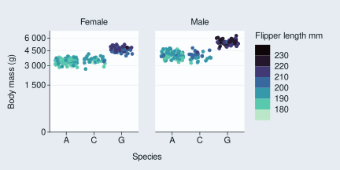
5. An additional facet2 argument to facet by a 2nd variable
A facet2 argument is also provided for extra
functionality and flexibility. If both facetand
facet2 variables are provided, then it’ll default to a
“grid” layout of facet by facet2. But users
can change this with a facet_layout = "wrap" argument.
# ggplot2
penguins |>
ggplot() +
geom_histogram(aes(x = flipper_length_mm)) +
facet_grid(sex ~ species)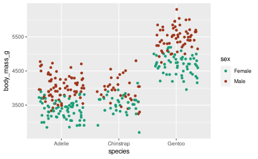
# ggblanket
penguins |>
gg_histogram(
x = flipper_length_mm,
facet = species,
facet2 = sex)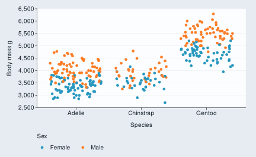
6. Prefixed arguments to customise titles, scales, guides, and faceting
Prefixed arguments are available to customise titles, scales, guides, and faceting. These are designed to work with the Rstudio auto-complete to help users remember and find the adjustment they need. Users should first determine whether they want to change something that relates to x, y, col or facet. Then they should type this prefix and press the tab key to access the list of options from the Rstudio auto-complete. Then they can use the arrow keys, and press tab again to select what they want.
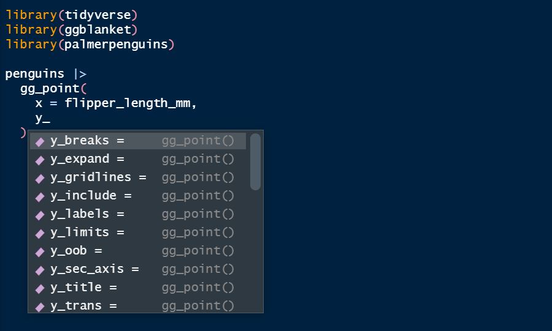
# ggplot2
penguins |>
ggplot() +
geom_jitter(aes(x = species,
y = body_mass_g,
colour = sex)) +
expand_limits(y = 0) +
scale_x_discrete(labels = \(x) stringr::str_sub(x, 1, 1)) +
scale_y_continuous(breaks = scales::breaks_width(1500),
labels = scales::label_number(big.mark = " "),
trans = "sqrt") +
labs(x = "Species", y = "Body mass (g)", col = "Sex") +
theme(legend.position = "top") +
theme(legend.justification = "left") +
scale_colour_manual(values = scales::hue_pal()(2),
guide = ggplot2::guide_legend(title.position = "top"))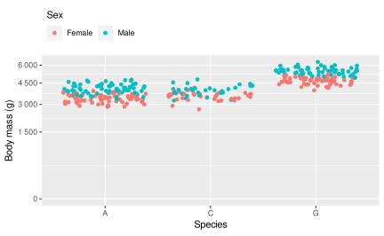
# ggblanket
penguins |>
gg_jitter(
x = species,
y = body_mass_g,
col = sex,
x_labels = \(x) stringr::str_sub(x, 1, 1),
y_include = 0,
y_breaks = scales::breaks_width(1500),
y_labels = scales::label_number(big.mark = " "),
y_trans = "sqrt",
y_title = "Body mass (g)",
col_legend_place = "t")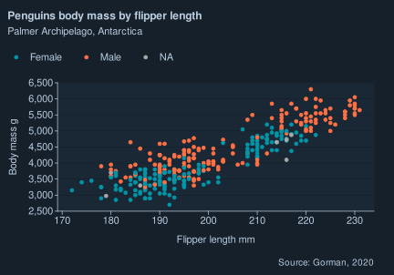
7. Unspecified x/y/col titles converted to sentence case
Unspecified x/y/col titles are converted to sentence case with
snakecase::to_sentence. All titles can be manually changed using the
*_title arguments. The default conversion is intended to
make titles sometimes able to be left as is.
# ggplot2
penguins |>
ggplot() +
geom_point(aes(x = flipper_length_mm,
y = body_mass_g,
colour = sex)) +
facet_wrap(~species) +
scale_x_continuous(breaks = scales::breaks_pretty(n = 3)) 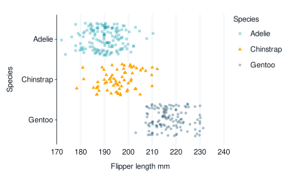
# ggblanket
penguins |>
gg_point(
x = flipper_length_mm,
y = body_mass_g,
col = sex,
facet = species)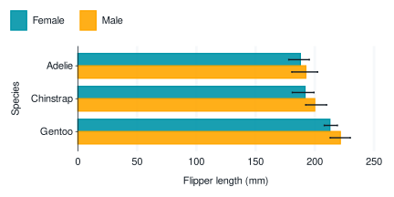
8. Ability to set the theme, including to provided themes
The ggplot2::theme_set function can be used to set the
theme globally, such that all subsequent plots will use this where the
theme argument of a plot is left as NULL. Alternatively,
users can use the theme argument in a gg_*
function.
ggblanket provides two complete ggplot2 theme functions called
light_mode (the default) and dark_mode. The
first argument is the base_size. This changes the size of
all the text to this, except the title is 10% higher and the caption is
10% lower. There are other arguments to change the family, face, colour,
size, margins and vertical adjustment of text.
Note that the gg_* function will control what gridlines
are present and the placement of the legend - despite the theme
provided. Therefore, if you are providing a theme other than
light_mode or dark_mode, ggblanket works well
if this theme has both vertical and horizontal gridlines. If users want
everything adjusted as per the theme, then they can + their
theme onto the plot instead.
Note that theme_set(theme_grey()) resets the set theme
for ggplot2 code to theme_grey and for ggblanket gg_*
functions to light_mode(). If you want ggblanket
gg_* functions to default to using
theme_grey(), then you must modify the base_size slightly
(e.g. theme_set(theme_grey(11.01))).
# ggblanket
theme_set(dark_mode())
penguins |>
gg_point(
x = flipper_length_mm,
y = body_mass_g,
col = sex,
title = "Penguins body mass by flipper length",
subtitle = "Palmer Archipelago, Antarctica",
caption = "Source: Gorman, 2020",
pal = c("#2596be", "#fc7c24"))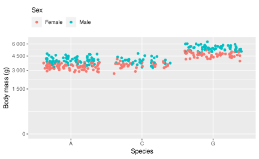
# ggblanket
theme_set(light_mode(base_size = 12))
penguins |>
gg_point(
x = flipper_length_mm,
y = body_mass_g,
col = sex,
title = "Penguins body mass by flipper length",
subtitle = "Palmer Archipelago, Antarctica",
caption = "Source: Gorman, 2020",
pal = c("#2596be", "#fc7c24"))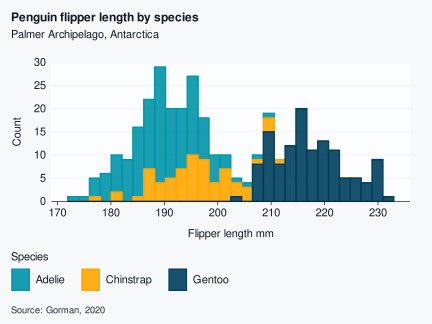
theme_set(theme_grey()) #unset the theme9. Pretty defaults for symmetry
Where the orientation is normal (i.e. vertical):
- Default x scale limits and expanding are as per ggplot2 defaults
- Default numeric y scale limits (that are non-transformed) start and end on a break with zero expanding
- Default categorical (or numeric transformed) y scale limits and expanding are as per ggplot2 defaults
- Default removal of vertical gridlines
It does the opposite where the orientation is horizontal (and also keeps y categorical values in correct order).
Note this symmetry approach does not apply: * if a
transformation other than identity or reverse is applied to x or y
scales. * for gg_raster, gg_contour_filled or
gg_density_2d_filled
# ggplot2
penguins |>
group_by(species, sex) |>
summarise(body_mass_g = mean(body_mass_g)) |>
ggplot() +
geom_col(aes(x = body_mass_g,
y = species,
fill = sex),
position = "dodge",
width = 0.75)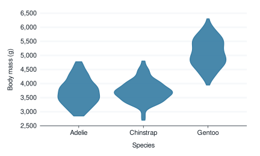
# ggblanket
penguins |>
group_by(species, sex) |>
summarise(body_mass_g = mean(body_mass_g)) |>
gg_col(
x = body_mass_g,
y = species,
col = sex,
position = "dodge",
width = 0.75)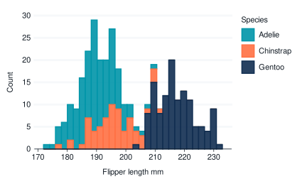
10. Access to other geom_* arguments via ...
The ... argument is placed in the gg_*
function within the wrapped ggplot2::geom_* function. This
means all other arguments in the geom_* function are
available to users (except the mapping and stat argument). Common
arguments from ... to add are size,
linewidth and width.
# ggblanket
penguins |>
gg_smooth(
x = flipper_length_mm,
y = body_mass_g,
col = sex,
linewidth = 0.5, #accessed via geom_smooth
level = 0.99) #accessed via geom_smooth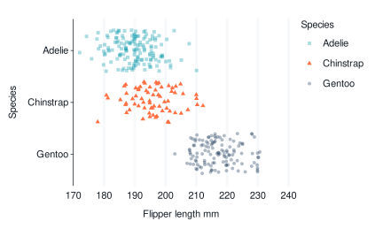
11. Ability to add multiple geom_* layers
Users can make plots with multiple layers with ggblanket by adding on
ggplot2::geom_* layers. The gg_* function puts
the aesthetics within the wrapped ggplot function.
Therefore, the aesthetics will inherit to any subsequent geoms added.
Geoms will plot in order. The gg_* function will plot the
associated geom as the first layer, and then other geoms will be plotted
on top of it.
Note that it is recommended that ggblanket users use the term
colour within geom_* functions to help keep
the distinction that the ggblanket col is the merged colour
and fill.
# ggblanket + ggplot2
penguins |>
gg_boxplot(x = species,
y = body_mass_g,
width = 0.5,
outlier.colour = NA) +
geom_jitter(colour = pal_blue)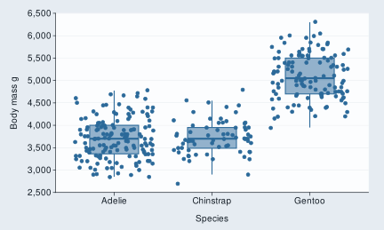
If some geoms have a col aesthetic and some do not, then
it is recommended to have the col variable in the
gg_* function. This enables ggblanket legend placement, as
well as the ability to adjust the col scale via the gg_*
function.
If you do not want a col aesthetic in your bottom plot
layer, but require it in subsequent layers - then you should use the
gg_blank function. Subsequent geom_*
layers where the col aesthetic is not required can have
colour = NA and/or fill = NA arguments - or
use the inherit.aes = FALSE argument.
Note it is a useful to convention to refer to the 2 dimensional
col/colour aesthetic in subsequent ggplot2
layers as colour to help avoid confusion with the merged
ggblanket col aesthetic.
The plot scales are constructed without knowledge of subsequent
layers. The gg_* function builds the x and y scales based
on the data, x, and y in the
gg_* function. These scales can be adjusted to accommodate
subsequent layers using the *_include or
*_limits arguments. Note for gg_blank, the
scale is also built based on the stat.
# ggblanket + ggplot2
d <- penguins |>
group_by(species) |>
summarise(body_mass_g = mean(body_mass_g)) |>
mutate(lower = body_mass_g * 0.95) |>
mutate(upper = body_mass_g * 1.2)
p1 <- d |>
gg_blank(
y = species,
x = body_mass_g,
col = species,
xmin = lower,
xmax = upper,
x_include = 0,
x_labels = \(x) x / 1000,
x_title = "Body mass kg",
col_legend_place = "r") +
geom_col(alpha = 0.9, width = 0.75) +
geom_errorbar(colour = "black", width = 0.1)
p2 <- d |>
gg_blank(
y = species,
x = body_mass_g,
xmin = lower,
xmax = upper,
col = species,
x_include = 0,
x_labels = \(x) x / 1000,
x_title = "Body mass kg",
col_legend_place = "r") +
geom_col(colour = NA, fill = "#d3d3d3", width = 0.75) +
geom_errorbar(width = 0.1)
p1 / p2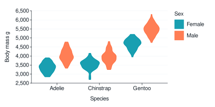
# ggblanket + ggplot2
d_wide <- gapminder::gapminder |>
filter(year %in% c(1967, 2007)) |>
select(country, year, lifeExp) |>
tidyr::pivot_wider(names_from = year, values_from = lifeExp) |>
mutate(gap = `2007` - `1967`) |>
slice_max(gap, n = 10) |>
mutate(country = forcats::fct_inorder(forcats::fct_drop(country)))
d_long <- d_wide |>
select(-gap) |>
tidyr::pivot_longer(-country,
names_to = "year",
values_to = "life_expectancy")
d_long |>
gg_blank(x = life_expectancy,
y = country,
col = year,
pal = pal_discrete[c(2, 1)],
x_include = 0,
col_legend_place = "r",
title = "We're living longer",
subtitle = "Biggest life expectancy rise, 1967\u20132007",
x_title = "Life expectancy",
y_title = "") +
geom_segment(aes(x = `1967`, xend = `2007`,
y = country, yend = country),
data = d_wide, inherit.aes = FALSE,
colour = "#dddddd", linewidth = 2) +
geom_point(size = 2) 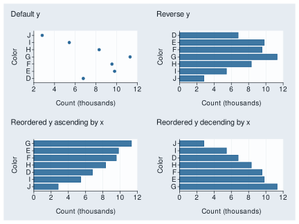
12. Other differences: stats, oobs, clipping, unused factor levels, ordering, alpha etc
ggblanket has some other key different defaults to ggplot2, which users should be aware of.
For all gg_* functions other than gg_blank,
the stat is locked to the relevant geom_* default. This
means if you would like to use a stat different to the default, you
should use gg_blank. By setting the stat to
that of the layer to follow if necessary to help the scales etc be
created appropriately. Note gg_blank only accepts stats
that are characters.
penguins |>
gg_blank(
x = body_mass_g,
y = species,
stat = "summary"
) +
geom_pointrange(stat = "summary", colour = pal_blue)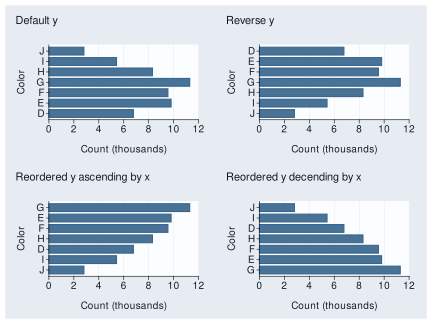
By default, ggblanket keeps values outside of the limits
(*_oob = scales::oob_keep) in calculating the geoms and
scales to plot. It also does not clip anything outside the
cartesian coordinate space by default
(coord = ggplot2::coord_cartesian(clip = "off")).
ggplot2 by default drops values outside of the limits in calculating
the geoms and scales to plot (scales::oob_censor). It also
clips anything outside the cartesian coordinate space by default
(coord = ggplot2::coord_cartesian(clip = "on")).
These deviations from ggplot2 were considered to be safer defaults for ggblanket (i.e. fail by plotting data outside the panel rather than fail by dropping data).
p1 <- economics |>
gg_line(
x = date,
y = unemploy,
x_limits = c(lubridate::ymd("2010-01-01"), lubridate::NA_Date_),
x_labels = \(x) stringr::str_sub(x, 3, 4),
title = "Limits set with default",
theme = light_mode(title_face = "plain"))
p2 <- economics |>
gg_line(
x = date,
y = unemploy,
x_limits = c(lubridate::ymd("2010-01-01"), lubridate::NA_Date_),
x_labels = \(x) stringr::str_sub(x, 3, 4),
coord = ggplot2::coord_cartesian(clip = "on"),
title = "Limits set with clip = 'off'",
theme = light_mode(title_face = "plain"))
p3 <- economics |>
gg_line(
x = date,
y = unemploy,
x_limits = c(lubridate::ymd("2010-01-01"), lubridate::NA_Date_),
x_labels = \(x) stringr::str_sub(x, 3, 4),
coord = ggplot2::coord_cartesian(clip = "on"),
x_oob = scales::oob_censor,
title = "Limits set with oob_censor",
theme = light_mode(title_face = "plain"))
p4 <- economics |>
filter(date >= lubridate::ymd("2010-01-01")) |>
gg_line(
x = date,
y = unemploy,
x_labels = \(x) stringr::str_sub(x, 3, 4),
title = "Limits set by filtering data",
theme = light_mode(title_face = "plain"))
(p1 + p2) / (p3 + p4)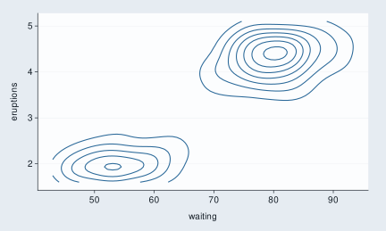
ggblanket does not drop unused any factor levels from the plot. If
users wish to drop unused levels they should do by mutating the variable
prior to plotting
(i.e. data |> mutate(var = forcats::fct_drop(var))).
Similarly, ggblanket requires unquoted variables for it’s aesthetics. If
you wish to reorder a variable or drop NAs, you should do it likewise
prior to plotting.
p1 <- palmerpenguins::penguins |>
gg_jitter(x = sex,
y = body_mass_g,
col = sex,
col_legend_place = "n")
p2 <- palmerpenguins::penguins |>
mutate(sex = factor(sex, levels = c("male", "female"))) |>
tidyr::drop_na(sex) |>
gg_jitter(x = sex,
y = body_mass_g,
col = sex,
col_legend_place = "n")
p1 + p2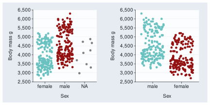
ggblanket uses different alpha defaults for the
different gg_* functions. Polygons that generally have no
gap or overlap default to 1: gg_bin_2d,
gg_contour_filled, gg_density_2d_filled,
gg_hex - as well as gg_sf for polygons with a
col aesthetic. Polygons that generally overlap default to
0.5: gg_density. Polygons that generally have key lines
within them also default to 0.5: gg_boxplot,
gg_crossbar, gg_ribbon and
gg_smooth. gg_label defaults to 0.05.
gg_blank has no alpha argument. Other polygons default to
0.9: gg_area, gg_bar, gg_col,
gg_histogram, gg_polygon,
gg_rect, gg_tile and gg_violin.
For all other contexts, alpha defaults to 1.